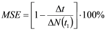
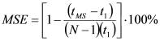
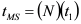
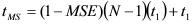
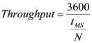
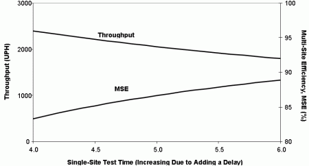
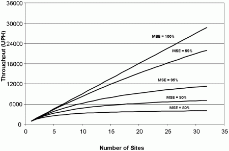
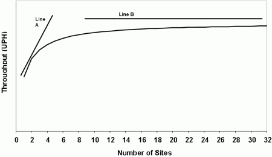

Multi-Site Efficiency and Throughput
Joe Kelly, Verigy
Paper ID 109861
Key Words
Multi-Site Efficiency, Throughput, UPH, Cost of Test, COT, ATE
Introduction
In the ATE (Automated Test Equipment) industry there are two key concepts used to measure the efficiency of making measurements. These concepts are multi-site efficiency and throughput. It is critical that both of these be used together so that all corner cases can be explored. These two concepts and their impact will be explored in this article.
It should be noted that throughout this article, a hypothetical device having a single-site test time of 4 seconds is used. This value is arbitrarily chosen and is not meant to reflect a specific device being tested on any manufacturer's ATE. It has also been chosen in an attempt to be independent from any "magic number" phenomenon, potentially skewing results. Additionally, it must be mentioned that the focus of this study is with the SOC front-end device testing market, involving primarily RF, analog- and digital-mixed signal and digital testing. The multi-site efficiency values for these devices are in the 85-95% range. The concepts also follow for the testing of other domains (such as memory) but such domains often have high parallelism and hence multi-site efficiencies much closer to 100%.
Multi-Site Efficiency
The ATE industry accepted definition [1] of the figure of merit multi-site efficiency, MSE, expressed in percent is

(Equation 1)where Δt is the difference in multi-site and single-site test execution time, ΔN is the difference in number of sites relative to single-site, and t1 is the single site test time. From both a mathematical as well as a definition point of view, the number of sites, N, is always greater than 1. Since ΔN and Δt are always referenced to the single-site case, this is more simply written as

. (Equation 2)The definition of multi-site efficiency is highly dependent upon an understanding of the qualitative description of what multi-site efficiency really means. Multi-site efficiency within the realm of ATE measures the deviation from perfect parallel execution of a test program (or individual test) across multiple sites in a test cell. Perfect parallelism is exhibited when one site is tested in a fixed amount of time and adding additional sites does not consume any additional test time. Perfect parallelism corresponds to 100% multi-site efficiency. In contrast to that, if there is absolutely no parallelism during testing, the overall multi-site test execution time scales with the number of sites,

(Equation 3)This corresponds to 0% multi-site efficiency and is obviously not desirable.
Often, people use incorrect equations for determining multi-site efficiency, and they do so because they only evaluate the two extreme cases, perfect parallelism and full serial, and see that their calculations yield 100% and 0% respectively. There are many equations that meet these two boundary conditions. It is their behavior in situations between these two extremes that causes discrepancies.
Number of Sites |
Execution Time (sec) |
Multi-Site Efficiency (%) |
Number of Sites |
Execution Time (sec) |
Multi-Site Efficiency (%) |
|---|---|---|---|---|---|
Case 1 |
|
|
Case 4 |
|
|
1 |
4 |
N/A |
1 |
4 |
N/A |
2 |
4 |
100 |
2 |
7 |
25 |
3 |
4 |
100 |
3 |
10 |
25 |
4 |
4 |
100 |
4 |
13 |
25 |
Case 2 |
|
|
Case 5 |
|
|
1 |
4 |
N/A |
1 |
4 |
N/A |
2 |
5 |
75 |
2 |
8 |
0 |
3 |
6 |
75 |
3 |
12 |
0 |
4 |
7 |
75 |
4 |
16 |
0 |
Case 3 |
|
|
Case 6 |
|
|
1 |
4 |
N/A |
1 |
4 |
N/A |
2 |
6 |
50 |
2 |
9 |
-25 |
3 |
8 |
50 |
3 |
14 |
-25 |
4 |
10 |
50 |
4 |
19 |
-25 |
Table 1 is presented to demonstrate the description of multi-site efficiency. The table is based upon a hypothetical single-site test execution time of 4 seconds. Cases 1 and 5 exemplify perfect parallel and serial test program executions respectively. Notice how Case 5 follows Equation (3). In Cases 2, 3, and 4, each added site increases the execution time in an amount equal to 25%, 50%, and 75% respectively. Notice that the multi-site efficiency values are reduced by those respective amounts. Multi-site efficiency values can be negative, or greater than 100% for that matter. In either of these cases, as demonstrated in Case 6, something is likely incorrect in the test program or with the ATE and the situation should be evaluated and remedied.
Efficiency Calculations in Other Industries
At times, engineers borrow or derive equations from other industries to arrive at (erroneous) multi-site efficiency values applied to ATE. Although there is a link to the most general equation for efficiency, work-in/work-out, the constraints on the definition of multi-site efficiency would make the linking of these an exercise in verbiage.
Another common error is when people use the calculation for efficiency describing the concept of parallel efficiency of parallel processors as used in the computer industry. In effect, it is an opposite situation. In the computer industry, the measure is to look at the efficiency of spreading a task across multiple processors, with the efficiency calculation pointing out internal overhead. In ATE, the measure is to add sites (tasks) to a fixed number of resources. If there are enough resources to handle the added sites (tasks) in parallel then the ATE efficiency calculation tends toward 1. If not (as is often the case with analog and RF where we only have a handful of receivers that can measure in parallel) the efficiency is less than 1.
Throughput
So far, this analysis has not mentioned the term Cost of Test (COT). In the end, COT is the ultimate measure that determines the production test conditions and resources. COT analysis can be overwhelming when taken to a low level. Although this article does not get into the concept of COT, the concept of throughput is a key contributor to the COT calculation. For further reading Reference [2] provides an excellent overview of the key contributors to COT.
The ATE industry standard definition of throughput is the measure of the units (devices) tested per hour (UPH). Throughput can be derived from Equations (2) and (3) by rearranging them to solve for the total execution time for multi-site, tMS,

. (Equation 4)Then, throughput in UPH is calculated by,

(Equation 5)Can Throughput Decrease Even with Increased Multi-Site Efficiency?
Yes. It cannot be overstressed that solely increasing multi-site efficiency is not always the right thing to do. Multi-site efficiency and throughput must be considered together. This is because it is possible to have improved multi-site efficiency at the expense of reducing the throughput. Consider the real-world situation where some measurement overhead occurs because of the ATE or test program. This is typically a uniform overhead (delay) and is the same for one site or for N sites. As the number of sites increases, this fixed delay becomes spread across the sites and less pronounced in the overall test time numbers. However, the larger this delay, the more the multi-site efficiency is increased, while decreasing throughput.
Number of Sites |
SS Test Time t1 (sec) |
MS Test Time tMS (sec) |
MSE (%) |
Throughput (UPH) |
|---|---|---|---|---|
4 |
4.0 |
6.0 |
83.3 |
2400 |
4 |
4.5 |
6.5 |
85.2 |
2215 |
4 |
5.0 |
7.0 |
86.7 |
2057 |
4 |
5.5 |
7.5 |
87.9 |
1920 |
4 |
6.0 |
8.0 |
88.9 |
1800 |
A fixed amount of overhead is added to the single-site test execution time. This same amount is also added to the overall multi-site test execution time. As the delay increases, so does multi-site efficiency. However, even though multi-site efficiency is improving, overall throughput is decreasing.
Consider the hypothetical scenario depicted in Table 2 and Figure 1. The initial case is that the single-site test time is 4 seconds and the quad-site test time is 6 seconds. From Equation (2), the multi-site efficiency is calculated to be 83% and the throughput is 2400 UPH from (3). If this same setup were performed on a tester that had some fixed internal measurement time overhead (on one or many measurements), both the single-site test time (t1) and overall multi-site test time (tMS) would increase by the same amount. This would, however, cause an artificially-inflated multi-site efficiency, yielding a reduced overall throughput. Notice how this arises because of the roles of t1 and tMS in Equations (2) and (3).

Figure 1
Graphical representation of data from Table 2, showing increasing of multi-site efficiency at the expense of decreased throughput.
The scenario shown in Table 2 demonstrates increasing multi-site efficiency with a slight increase in single site test time. Note the resulting reduced throughput in UPH. This table demonstrates that the number of units that can be shipped in an hour (throughput) has a definite link to the individual test time, as well as multisite efficiency. The important thing to note is that one cannot always look at just the multisite efficiency values to judge the quality of a test program. It is crucial to observe the throughput numbers as well. Of course, the best scenario is when multisite efficiency approaches 100% and throughput is at a maximum value (i.e., low test time).
Multisite Efficiency Impact on Number of Sites
Multisite efficiency can also be used to demonstrate that unless testing is not perfectly parallel (100% multisite efficiency) there is a limit to the benefit of adding sites to a test cell.
Plotting throughput for various values of multisite efficiency, as in Figure 2, one can observe that aside from the linear case of perfect parallelism, there is an asymptotic value of throughput that is attained with increasing number of sites. This asymptote is independent of any of the additional factors (socket/load board uptime, etc.) that are considered in COT analysis. Taking those into consideration would produce a downward trend in the curve with increased numbers of sites.

Figure 2
Throughput as a function of number of sites in the test cell. Notice that for decreasing values of multisite efficiency, the asymptotic throughput level of no return on investment is reached earlier.
Figure 3 provides a close-up look at one of the curves of Figure 2 (other than the linear case of 100% multisite efficiency). There are two main sections to this curve; the linear section (Line A) and the asymptotic section (Line B). Most current applications in SOC front-end device testing are using a relatively low site count (4-8) and thus are still within the linear range, benefiting from adding sites. It is more the thought of things like 16- and 32-site testing for RF front-ends that need to be considered if there is really a good return on investment from adding these sites to the test cell.

Figure 3
Throughput as a function of number of sites in the test cell showing the two regions of behavior; A. linearly-increasing throughput with increased number of sites and B. asymptotic region at which little or no gain in throughput is realized.
Why Can't I Keep Adding Sites to My Test Cell?
For an integrated device consisting of RF, analog- and digital-mixed signal, and digital testing needs, it is not practical to add sites endlessly. From a purely digital point of view, if a device has a low pin count, and the tester has enough digital channels (which are often relatively low-cost) the site count can be increased significantly. However, in order to maintain a high degree of parallelism (i.e., multisite efficiency) of the measurements for RF and mixed-signal testing, additional measurement receivers have to be added to the tester. This can be much more costly than adding digital channels. It is here that the trade-offs need to be considered. It is also because of this that in RF and mixed-signal testing for higher numbers of sites, it is often necessary to invoke semi-parallel testing where multiple passes through the sites perform only portions of the site's testing in parallel on each pass. This can be used to offset the cost of the tester hardware. Keeping in mind the true multisite efficiency and throughput numbers, the proper tradeoffs can be made resulting in an optimized throughput and reduced COT.
In addition to tester limitations, there are also often handler, prober, and load board limitations. The index time of a handler places a cap on the throughput. Additionally, the handler rarely operates at the maximum performance specified because of potential jamming, resulting in downtime of the test cell. Index and sort time limitations can really be critical as test times become close to the index and sort times.
Real-World Results
A recent study [3] using the V93000 Port Scale RF tester resulted in multisite efficiencies of greater than 95% on an RF SOC transceiver in a quad-site application. High levels of both multisite efficiency and throughput were achieved because of the V93000's parallel RF receiver architecture and by masking the data transfer between ATE hardware and workstation by the calculations. The multithreading allowed a close-to-parallel performance that would not otherwise be achieved without the multi-threading.
Conclusion
Multisite efficiency and throughput are two key concepts that work together to provide an input to the common Cost of Test calculations that are used throughout the industry. Multisite efficiency is an often misunderstood calculation and as such, it was the goal of this article to address these misconceptions and provide a solid explanation of the proper formula used to calculate multisite efficiency. It was also shown that even though multisite efficiency is high, or can be increased, it is necessary to also evaluate throughput to ensure that throughput is not being traded off for multisite efficiency, thereby increasing overall COT.
References
[1] Semiconductor Industry Association (SIA), "International Technology Roadmap for
Semiconductors, 2007 Edition" (2007)
[2] J. Rivoir, "Parallel Test Reduces Cost if Test More Effectively than Just a Cheap Tester," Proceedings of Semicon Europe 2005 (2005).
[3] L. Sassoon, J. Smith, M. Engelhardt, and J. Kelly, "Multithreading on V93000 Reduces Multi-Site Test Time on Intel Front-End Transceiver," Proceedings of VOICE 2008, Verigy Users' Group (2008).